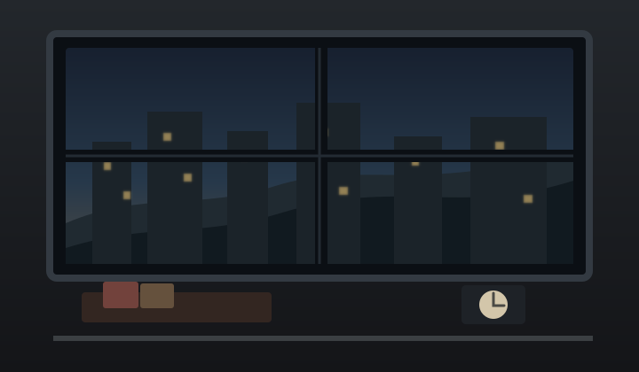

Witch Keni / AI Game 01
雾港三小时
≡
系统弹窗
背景说明
痕迹档案
游戏设置
开启氛围音
重新开始
清除本机痕迹
封锁倒计时
3h
目标：进入地下避难层
准备阶段
醒来
雾港封控简报
×
雾港东区在上午九点进入封控清洗倒计时。地下避难层只会在最后窗口短暂开启，你需要在三小时内带着足够理由抵达门前。
倒计时
时间归零时，封锁线合拢。没有入层，就只能留下新的痕迹。
线索
路线、节拍、通行规律。线索越多，关键行动越稳，也越接近真正的门。
警觉
巡检灯、噪声和目击者正在多注意你。警觉越高，检定越容易被压低；花时间移动会让警觉慢慢冷却。
属性
体力、补给、意志、隐蔽都会参与事件检定。任一项归零，本局都会崩盘。
道具
水、粮、工具和通行物。它们能支付代价，也会占用携带空间。
征兆
短波、旧照片、异常钥匙之类的东西。它们更像房子递来的暗示。
痕迹
上一条路线留下的便签、刻痕和习惯。它们不会明说真相，只会让下一次更熟悉。
本局结算
×
事件回执
×
痕迹档案
×